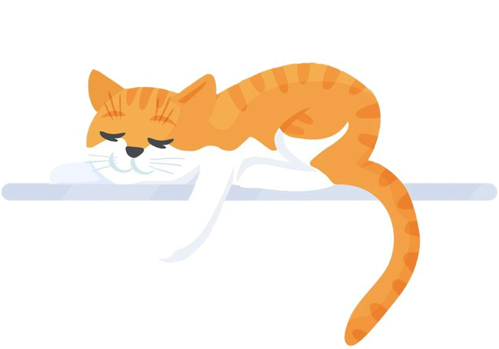

Our shelter operates and helps hundreds of animals each year since 2005. Unfortunatly there are namy more animals that still needs our help. This website is a place that unites private people and other shelters and gives them the option to post their pets for adoption and use our resources for free. Our goal is to make shelters the first place potential adopters turn when looking to get a new pet, ensuring that all healthy and treatable pets find loving homes. We do this by breaking down misconceptions surrounding shelter pets and celebrating the unique bond between every shelter pet and parent.
